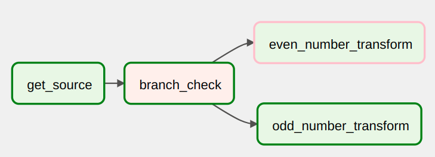

Branching DAG
When designing data pipelines, there may be use cases that require more complex task flows than Task A > Task B > Task C. For example, let's say that there is a use case where different tasks need to be chosen to execute based on the results of an upstream task. We call this branching in Airflow, and it uses a particular Operator BranchPythonOperator to handle this use case.
The BranchPythonOperator takes a Python function as an input. The function must return a list of task IDs for the DAG to process using the function.
To give you an example of branching, let's create a DAG that uses Python random.choice function to decide which type of no-op transform it will execute.
Create a file named 5_branching_dag.py that contains the following code:
from datetime import datetime
import time
from airflow.models import DAG
from airflow.operators.dummy import DummyOperator
from airflow.operators.python import BranchPythonOperator
with DAG(
dag_id="5_braching_dag",
start_date=datetime(2021, 12, 1),
catchup=False,
schedule_interval="@daily",
tags=["custom"],
) as dag:
get_source = DummyOperator(task_id="get_source")
def branch_func():
if int(time.time()) % 2 == 0:
return "even_number_transform"
else:
return "odd_number_transform"
branch_check = BranchPythonOperator(
task_id="branch_check", python_callable=branch_func
)
even_number_transform = DummyOperator(task_id="even_number_transform")
odd_number_transform = DummyOperator(task_id="odd_number_transform")
get_source >> branch_check >> [even_number_transform, odd_number_transform]

From the historical runs, we can see that different transform tasks were run.